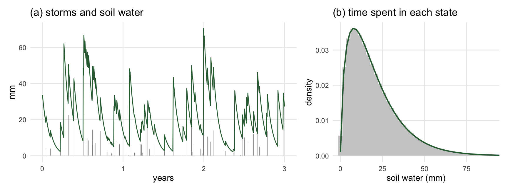
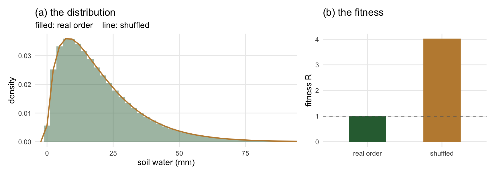
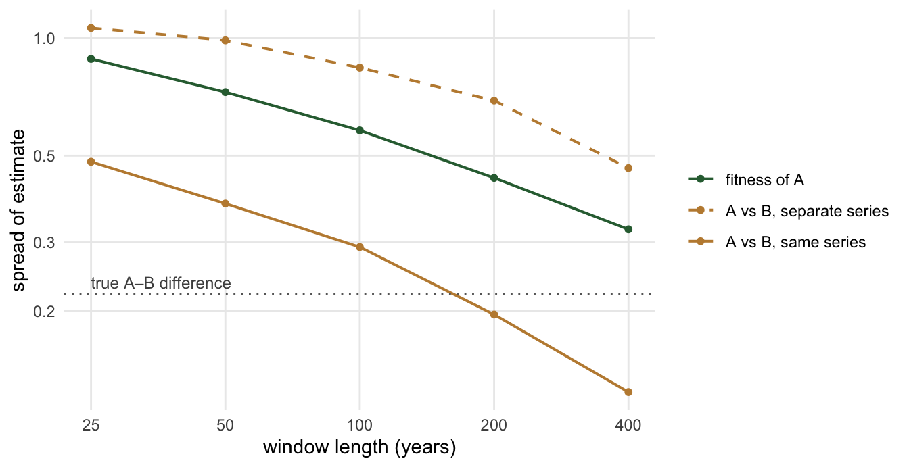

How to calculate fitness in pulse-driven environments
fitness
adaptive-dynamics
semi-arid
theory
plant calculates fitness by averaging a seed’s lifetime output over the ages of the patches it might land in. That works for forests reset by disturbance. It does not obviously work for a semi-arid landscape driven by rainfall pulses, with no reset at all. This post explains the principle underneath the forest calculation, why it carries over, and the one-long-run method we plan to use, with a toy model you can run in a few seconds.
Published
October 12, 2026
plant @develop f39bcb3
NoteWhat this post is, and is not
This is a method, written for PhD students and team members joining the semi-arid work. None of it is in plant yet; the pin above is the state of develop it was written against. The figures come from a deliberately small toy model in base R, not from plant, so you can read every line of it. The toy has no competition and one made-up plant. It is there to make the ideas visible, not to predict anything.
The question
We want to use plant and regnans to ask eco-evolutionary questions about semi-arid Australia. Which combinations of traits are evolutionarily stable under a given rainfall regime? Can annual herbs, perennial grasses and woody shrubs coexist, and on what terms? How does the answer change between an upslope patch that sheds water and a downslope patch that receives it?
Every one of those questions runs through one calculation: the invasion fitness of a rare mutant strategy in the environment created by the residents. Get that number, and the community assembly machinery in regnans does the rest. The difficulty is that the way plant computes it today was built for forests.
How plant calculates fitness now
In a forest, a patch is reset by disturbance and then develops along the same trajectory every time. So a patch’s age since disturbance tells you everything about it: how tall the canopy is, how much light reaches the ground, how much competition a seedling faces. Disturbance strikes patches independently, so across the landscape the distribution of patch ages\(P(a)\) stays fixed even though every patch is changing.
\[
R = \int_0^\infty P(a)\, \tilde R(a)\, \mathrm{d}a .
\]
Above one, the mutant can invade. To compute it, plant runs one patch from bare ground, introduces mutant nodes along the way, and weights each by how common patches of its age are. One run stands in for the whole landscape. The Theory page has the details.
What breaks in the semi-arid
Three things that made the forest calculation work are gone.
There is no reset. Without stand-replacing disturbance, nothing pins a patch to a known starting point, so patch age tells you nothing.
The environment has memory. Rain arrives as pulses of random size at random times. The soil stores them, and plants store carbon and grow roots in response. What a seedling meets depends on the recent sequence of rain, not on a single number.
Rain is shared. A big wet year is wet across a whole catchment. Patches are not independent draws, so the landscape does not average itself out at every moment the way a disturbance mosaic does.
And a fourth thing is added: landscape position. An upslope patch and a downslope patch receive different effective rainfall from the same storms.
The obvious response is brute force: simulate many patches under many random draws of rainfall and count seeds. That is expensive, and it turns out to be unnecessary.
The principle underneath
The forest calculation is one application of a more general result. Metz and Gyllenberg showed that in a metapopulation of patches, a rare mutant’s fitness is its expected lifetime output of dispersing seeds, averaged over the stationary distribution of the local states that its seeds land in (Gyllenberg & Metz, 2001; Metz & Gyllenberg, 2001).
“Stationary” means the long-run distribution: the fraction of time, or of patches, in each state once the system has settled down. In a forest the local state that matters is patch age, and its stationary distribution is \(P(a)\). That is the only reason patch age appears in the formula. The principle does not care what the state is.
In the semi-arid, the local state is the soil-water profile together with the plants standing in it. So the job becomes: find the stationary distribution of soil-water states, and find the lifetime output of a seed that lands in each.
Westoby’s suggestion: the distribution of soil-water states
Mark Westoby suggested starting exactly there: work out the distribution of soil-water states that a rainfall regime and a landscape position produce, then ask what each growth form makes of it. The idea goes back to his 1980 paper, which described a climate not by its mean aridity but by the probability distribution of “types of time”: just wetted, staying wet, and drying out (Westoby, 1980). Different growth forms use different types of time, and each distribution should have a characteristic mixture of growth forms. He did not compute that mixture for any climate. Mark describes the idea as loosely like coexistence by subdividing successional time in a forest, except that rainfall pulses, not disturbance, create the different kinds of time. That is why the forest calculation is the right place to start.
The first half is now easy. Under pulsed rain, with random timing and depth, and losses that depend on how wet the soil is, the long-run distribution of soil moisture has a closed form (Rodriguez-Iturbe, Porporato, Ridolfi, Isham, & Cox, 1999; Laio, Porporato, Ridolfi, & Rodriguez-Iturbe, 2001). In the simplest version, storms arrive at rate \(\lambda\) with mean depth \(\alpha\) and the soil loses a fixed fraction \(k\) of its water per day; the stationary soil water is then gamma-distributed with shape \(\lambda / k\) and scale \(\alpha\).
The toy model: rain, a soil bucket, and one plant
library(ggplot2)library(patchwork)set.seed(1)## Rain: storms at random times, exponential depths. Soil: a bucket losing a## fixed fraction k of its water per day. Simulated exactly, sampled daily.years <-10000lambda <-1/15# storms per dayalpha <-12# mean storm depth, mmk <-1/25# fraction of soil water lost per dayndays <- years *365n_ev <-rpois(1, lambda * ndays)t_ev <-sort(runif(n_ev, 0, ndays))d_ev <-rexp(n_ev, 1/ alpha)day <-ceiling(t_ev)inc <-numeric(ndays)agg <-tapply(d_ev *exp(-k * (day - t_ev)), day, sum)inc[as.integer(names(agg))] <- aggx <-numeric(ndays); x[1] <- inc[1]for (i in2:ndays) x[i] <- x[i -1] *exp(-k) + inc[i]rain <- incburn <-3650# let the bucket forget its startx <- x[-(1:burn)]; rain <- rain[-(1:burn)]nd <-length(x)## One plant. A seedling starting on day t0 dies in any dry spell where soil## water stays below theta_d for D days in a row. From age m it makes seed at a## rate set by soil water above theta_c. It lives at most L days. Returns## lifetime output by start day, and zero on days too dry to germinate.lifetime_output <-function(x, theta_g =25, theta_d =8, D =90,m =3*365, L =40*365, theta_c =10) { nd <-length(x) run <-integer(nd); r <-0Lfor (i inseq_len(nd)) { r <-if (x[i] < theta_d) r +1L else0L; run[i] <- r } nk <-rep(.Machine$integer.max, nd) nk[run == D] <-which(run == D) nk <-rev(cummin(rev(nk))) # next killing day at or after t C <-c(0, cumsum(pmax(x - theta_c, 0))) t0 <-seq_len(nd) start <- t0 + m end <-pmin(nk -1L, t0 + L, nd) out <-ifelse(end >= start, C[end +1] - C[start], 0) out[x <= theta_g] <-0# did not germinate out[t0 + L > nd] <-NA# life would run past the end out}## Seeds wait in the soil until rain wets it past theta_g, so every life starts## on a germinating rain: a day the soil crosses theta_g on the way up.germinating_rains <-function(x, theta_g =25) {which(x[-1] > theta_g & x[-length(x)] <= theta_g) +1L}## Strategy A, and strategy B: survives 95-day dry spells, but needs more water## before it seeds. Keep the rains whose nodes can live out their lives, and## scale output so A exactly replaces itself (R = 1), as a resident would.RA <-lifetime_output(x)RB <-lifetime_output(x, D =95, theta_c =10.2)ev <-germinating_rains(x)ev <- ev[!is.na(RA[ev]) &!is.na(RB[ev])]c_scale <-1/mean(RA[ev])RA <- RA * c_scaleRB <- RB * c_scalegreen <-"#2E6B3F"; sand <-"#C08A3E"; grey <-"grey55"theme_set(theme_minimal(base_size =11) +theme(panel.grid.minor =element_blank()))
Show the code
idx <-1:(3*365)pa <-ggplot(data.frame(t = idx /365, x = x[idx], rain = rain[idx])) +geom_col(aes(t, rain), fill = grey, width =1/365) +geom_line(aes(t, x), colour = green, linewidth =0.5) +labs(x ="years", y ="mm", title ="(a) storms and soil water")pb <-ggplot(data.frame(x = x), aes(x)) +geom_histogram(aes(y =after_stat(density)), bins =80, fill ="grey80") +stat_function(fun = dgamma, args =list(shape = lambda / k, scale = alpha),colour = green, linewidth =0.8) +coord_cartesian(xlim =c(0, 90)) +labs(x ="soil water (mm)", y ="density",title ="(b) time spent in each state")pa + pb +plot_layout(widths =c(1.6, 1))

Figure 1: One long run samples the distribution. (a) Three years of the toy: storms (bars) and the soil water they leave behind (line). (b) Soil water over all 10,000 years of the run (histogram) against the closed-form stationary distribution (line). They agree because the run is stationary: averaging over time is averaging over the distribution.
So for any rainfall regime and landscape position, we can write down the distribution of soil-water states without simulating anything. That is a fast screen: for anything that depends only on the water state at the moment, such as carbon gain at a given leaf area, the long-run average is just an average over this curve. It is also a check. Whatever we simulate must reproduce the curve, or the run has not settled.
Why the distribution alone is not fitness
The trouble is that a plant’s lifetime output depends on the order in which states arrive, not only on how often each occurs. Drought kills by duration: a long run of dry days, not one dry day. Establishment needs a wet start followed by enough wet weeks.
First, when does a plant’s life start? As Mark Westoby pointed out to us, seeds are shed at one time and germinate at another. Buried seeds wait in the soil, dying at a roughly steady rate, until a rain wets it enough to germinate them. A seed shed on a dry day is not lost, only waiting, so every life starts on a germinating rain. In the toy that is a rain that takes the soil past 25 mm, which happens about 6 times a year. Figure 2 shows the lifetime output of the node each of those rains starts.
Figure 2: Lifetime output depends on what follows germination. Each point is the lifetime seed output of one toy node, by the day the rain that germinated it fell, over 60 years. Every node starts from much the same soil, just wetted past the germination threshold. Some germinate just before a long drought and die young; others germinate after one and live for decades. Grey lines mark the day each lethal drought reaches 90 days and kills every plant then alive.
The cleanest way to see it is to keep the distribution and destroy the order. Shuffling the days of the soil-water record leaves the histogram exactly as it was, but long dry spells vanish, because dry days no longer come in runs.
Show the code
xs <-sample(x)RS <-lifetime_output(xs) * c_scalees <-germinating_rains(xs)es <- es[!is.na(RS[es])]fit <-data.frame(series =c("real order", "shuffled"),R =c(mean(RA[ev]), mean(RS[es])))pa <-ggplot() +geom_histogram(aes(x, y =after_stat(density)), data.frame(x = x),bins =80, fill = green, alpha =0.45) +geom_freqpoly(aes(x, y =after_stat(density)), data.frame(x = xs),bins =80, colour = sand, linewidth =0.8) +coord_cartesian(xlim =c(0, 90)) +labs(x ="soil water (mm)", y ="density", title ="(a) the distribution",subtitle ="filled: real order line: shuffled")pb <-ggplot(fit, aes(series, R, fill = series)) +geom_col(width =0.5, show.legend =FALSE) +geom_hline(yintercept =1, linetype =2, colour ="grey40") +scale_fill_manual(values =c(green, sand)) +labs(x =NULL, y ="fitness R", title ="(b) the fitness")pa + pb +plot_layout(widths =c(1.6, 1))

Figure 3: Same distribution, different order, different fitness. (a) The soil-water record and a shuffled copy of it have identical distributions; the two histograms overlap exactly. (b) The fitness of the same toy plant on each. On the real sequence it exactly replaces itself. On the shuffled one, with no long droughts, its fitness is about four times higher.
On the shuffled record the toy plant’s fitness is 4.0; on the real one it is 1. A fitness calculated from the distribution alone cannot tell these two apart. So the distribution supplies the weights, but something has to supply the sequence that follows each starting state.
The method: one long run, many germinating rains
Here is the cut-through. It is the forest calculation with time in place of patch age.
Run one patch for a long time under one realisation of the rainfall process, with the resident community in it, until it settles into a steady state. Steady here means stationary: the community keeps fluctuating with the rain, but its long-run statistics stop changing. This burn-in is paid once. Save the state at the end of it.
Introduce mutant seedlings at each germinating rain in a window that starts after the burn-in. plant already introduces nodes at a schedule of times; only the schedule and the weighting change.
Record each one’s lifetime output\(\tilde R(t_i)\), running past the end of the window long enough for late arrivals to live out their lives.
Average over the \(N\) germinating rains\(t_1, \dots, t_N\) in the window: \[
R = \frac{1}{N} \sum_{i=1}^{N} \tilde R(t_i) .
\]
Because the run is stationary, the germinating rains in the window are a fair sample of all the germinating rains the climate produces, and the soil and stand at those moments are a fair sample of the states that seedlings start from. So averaging over them is the average over the stationary distribution of states that seeds land in, which is what Metz and Gyllenberg ask for. And each node carries the real sequence that follows it, which is what Figure 3 shows we need. One run delivers both the weights and the sequence.
In code this is a small change. In the forest the weight on a seed arriving at age \(a\) is the patch-age density \(P(a)\). Here the weight sits on the germinating rains in the window, equally on each, and is zero everywhere else. Weighting each rain equally assumes, as a first approximation, that when a seed was shed does not matter, only that it survives in the soil until a rain germinates it. Everything downstream, from the fitness integral in plant to the assembly loop in regnans, is untouched.
Annuals and perennials on the same run
For a long-lived shrub, one life spans dozens of rain pulses and several droughts, so each individual experiences something close to the long-run average and \(R\) above is the right fitness. For an annual it is not. An annual lives one season, and its population multiplies by a different factor every year: large after a good year, near zero after a bad one. What matters then is the long-run growth rate, the average of the logarithm of the yearly multiplication, not the average multiplication itself (Tuljapurkar & Orzack, 1980; Metz, Nisbet, & Geritz, 1992). With a seed bank that survives a year with probability \(s\), a fraction \(g\) of seeds germinating, and \(Y_t\) seeds per germinant in year \(t\), an annual invades when
This is Cohen’s classic germination problem (Cohen, 1966), and it is the storage effect of coexistence theory (Chesson, 2000) computed directly instead of decomposed into parts. The useful thing is that \(Y_t\) comes from the same run: introduce an annual node at each year’s germinating rain, harvest it at the end of the season. Annuals and perennials are judged on one run and one rainfall series, which is what the annual–woody coexistence question needs. For in-between life histories, like a perennial grass living ten years, the toy and the pilot will tell us whether \(R\) is close enough or the growth rate is needed.
Uphill and downhill
Landscape position adds a dimension but not a new idea. Run one long patch per position, both under the same storms. The upslope patch keeps each storm only up to what its soil can hold and sheds the rest; the downslope patch receives that excess on top of its own rain. Water only flows downhill, so the upslope run can go first and hand its runoff, storm by storm, to the downslope run. Because the downslope gain comes in the same storms as the upslope loss, the two positions must share one rain series. Then ask where seeds go. If a seed produced in position \(i\) lands in position \(j\) with probability \(D_{ij}\), the expected number of offspring in \(j\) per seed in \(i\) is \(D_{ij} \tilde R_j\). With two positions that is a \(2 \times 2\) matrix, and the mutant’s fitness is its largest eigenvalue: the long-run multiplication of a lineage that keeps moving between positions. This is the same Metz and Gyllenberg result, now with two kinds of patch (Metz & Gyllenberg, 2001). It is also where source–sink structure appears: a position where a strategy cannot replace itself can still hold it, fed by seed from a position where it can.
How long a run?
A fitness estimated from a finite window is noisy, because a few droughts more or less in the window shift it. The question is how long the window must be, and the toy gives a feel for the answer.
Show the code
yr <- (ev -1) %/%365# year of each germinating rainW <-c(25, 50, 100, 200, 400)spread <-do.call(rbind, lapply(W, function(wy) { block <- yr %/% wy keep <- block <max(block) # drop the last, partial block mA <-tapply(RA[ev][keep], block[keep], mean) mB <-tapply(RB[ev][keep], block[keep], mean) nb <-length(mA)data.frame(years = wy,what =c("fitness of A", "A vs B, same series", "A vs B, separate series"),sd =c(sd(mA), sd(mB - mA), sd(mB[-1] - mA[-nb]))) # separate: next block}))true_diff <-mean(RB[ev] - RA[ev])spread$what <-factor(spread$what, levels =c("fitness of A", "A vs B, separate series", "A vs B, same series"))ggplot(spread, aes(years, sd, colour = what, linetype = what)) +geom_line(linewidth =0.7) +geom_point(size =1.4) +geom_hline(yintercept = true_diff, linetype =3, colour ="grey40") +annotate("text", x =25, y = true_diff, label ="true A–B difference",hjust =0, vjust =-0.5, size =3.2, colour ="grey30") +scale_x_log10(breaks = W) +scale_y_log10(breaks =c(0.1, 0.2, 0.3, 0.5, 1)) +scale_colour_manual(values =c(green, sand, sand)) +scale_linetype_manual(values =c(1, 2, 1)) +labs(x ="window length (years)", y ="spread of estimate",colour =NULL, linetype =NULL)

Figure 4: Comparisons converge faster than levels, if they share a rain series. Spread (standard deviation) of toy fitness estimates against window length, across non-overlapping windows of the 10,000-year run. Green: the fitness of one strategy. Brown, solid: the difference in fitness between strategies A and B, estimated on the same rain series. Brown, dashed: the same difference estimated on separate series. The dotted line is the true difference; a comparison is resolved roughly where its curve falls well below it.
Three lessons, all from the toy, so read them as orders of magnitude rather than numbers for TF24.
Levels are expensive. The spread of one strategy’s fitness is still 32% after 400 years. Pinning fitness down to a percent by brute force would take something like 400,000 years. The reason is that nodes germinating within one lifetime of each other share the same future droughts, so their outputs rise and fall together; the run has to cover many lifetimes’ worth of drought history before the luck averages out.
Comparisons are cheaper, if they share the rain. Evolution acts on differences between strategies, and selection gradients are differences too. Running both strategies through the same rain series removes the luck of the draw that they have in common. In the toy, the same precision needs between 5 and 14 times fewer years, more as the window lengthens. After 400 years on a shared series, the difference between A and B, 0.22, is 1.8 times its spread; on separate series the spread is still 2.1 times larger than the difference. The rule that follows is simple: every fitness evaluation in an assembly uses the same rain series, and we check the answer on a second series separately.
Sampling arrivals by soil-water state does not help. Every node starts on a germinating rain, from much the same soil, and in the toy the soil water at germination explains 0% of the spread in lifetime output. The spread in Figure 2 comes from what happens after germination, so choosing arrivals by their soil state cannot shorten the run.
There is one more route, which shortens each run rather than the total: give up the single long run after the burn-in. The saved steady state is a library of starting points: start many short mutant runs, each one lifetime long, from states sampled along it. The total simulated time is similar, but each run is short, they run in parallel, and gradients only need to be carried back through one lifetime.
What has to be built
plant cannot do this yet. It runs a patch for a fixed period after a disturbance, from a fixed schedule of node introductions. The method needs a continuous patch: one that keeps introducing nodes as it goes, can start from a saved state, stops on a convergence test for the burn-in and a fixed horizon for the window, keeps the lifetime output of every node while thinning the rest of its history, and stops tracking old plants individually without losing their seed output. That is plant#519, and its requirements are listed there. It depends on rainfall arriving as discrete events (plant#628). Handing runoff downhill one storm at a time needs only those events and a record of each storm’s runoff; patches that exchange water both ways need the multi-patch work in plant#427.
Two things are open and will be answered by measurement, not argument. Does a stand of mulga under pulsed rain settle into a steady state with no disturbance, and how long does it take? And how long a window does a selection gradient need for TF24, as opposed to the toy?
Take-aways
plant’s fitness was never really about patch age. It is an average of a seed’s lifetime output over the stationary distribution of the states seeds land in; patch age is that state in a forest.
In the semi-arid the state is soil water and the plants in it. Its distribution is known in closed form for a rainfall regime and landscape position, which gives a fast screen and a check.
The distribution alone is not fitness, because drought and establishment depend on the sequence. Shuffling the toy’s soil-water record leaves the distribution unchanged and roughly quadruples its fitness.
One long stationary run, with mutant seedlings introduced at each germinating rain in a window, samples the states seedlings start from and keeps the sequence that follows each. In code it is a change of weights.
Perennials use the average lifetime output; annuals use the average log of yearly multiplication; both come from the same run. Landscape positions combine through a small matrix.
Fitness levels are very expensive to pin down; fitness differences on a shared rain series are many times cheaper. Always compare strategies on the same series.
References
Chesson, P. (2000). Mechanisms of maintenance of species diversity. Annual Review of Ecology and Systematics, 31, 343–366. doi:10.1146/annurev.ecolsys.31.1.343
Cohen, D. (1966). Optimizing reproduction in a randomly varying environment. Journal of Theoretical Biology, 12(1), 119–129. doi:10.1016/0022-5193(66)90188-3
Falster, D. S., Brännström, Åke, Westoby, M., & Dieckmann, U. (2015). Multi-trait eco-evolutionary dynamics explain niche diversity and evolved neutrality in forests. bioRxiv, 014605. doi:10.1101/014605
Falster, Daniel S., Brännström, Åke, Westoby, M., & Dieckmann, U. (2017). Multitrait successional forest dynamics enable diverse competitive coexistence. Proceedings of the National Academy of Sciences, 114(13). doi:10.1073/pnas.1610206114
Gyllenberg, M., & Metz, J. A. J. (2001). On fitness in structured metapopulations. Journal of Mathematical Biology, 43(6), 545–560.
Laio, F., Porporato, A., Ridolfi, L., & Rodriguez-Iturbe, I. (2001). Plants in water-controlled ecosystems: Active role in hydrologic processes and response to water stress. II. Probabilistic soil moisture dynamics. Advances in Water Resources, 24(7), 707–723. doi:10.1016/S0309-1708(01)00005-7
Metz, J. A. J., & Gyllenberg, M. (2001). How should we define fitness in structured metapopulation models? Including an application to the calculation of evolutionarily stable dispersal strategies. Proceedings of the Royal Society of London - Series B: Biological Sciences, 268(1466), 499–508.
Metz, J. A. J., Nisbet, R. M., & Geritz, S. A. H. (1992). How should we define ’fitness’ for general ecological scenarios? Trends in Ecology and Evolution, 7(6), 198–202. doi:10.1016/0169-5347(92)90073-K
Rodriguez-Iturbe, I., Porporato, A., Ridolfi, L., Isham, V., & Cox, D. R. (1999). Probabilistic modelling of water balance at a point: The role of climate, soil and vegetation. Proceedings of the Royal Society of London. Series A: Mathematical, Physical and Engineering Sciences, 455(1990), 3789–3805. doi:10.1098/rspa.1999.0477
Tuljapurkar, S. D., & Orzack, S. H. (1980). Population dynamics in variable environments I. Long-run growth rates and extinction. Theoretical Population Biology, 18(3), 314–342. doi:10.1016/0040-5809(80)90057-X
Westoby, M. (1980). Elements of a theory of vegetation dynamics in arid rangelands. Israel Journal of Botany, 28, 169–194.